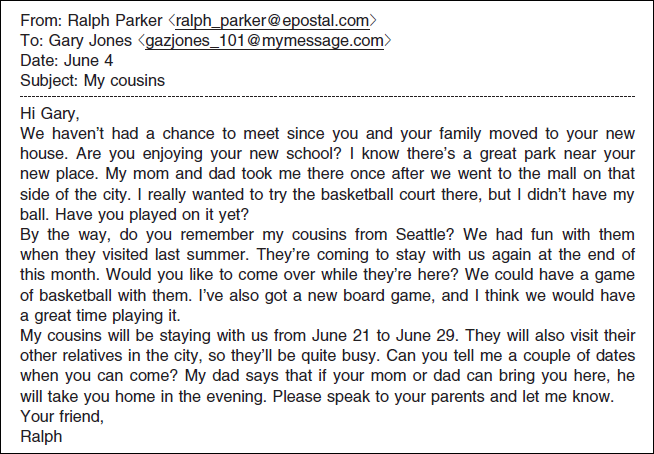
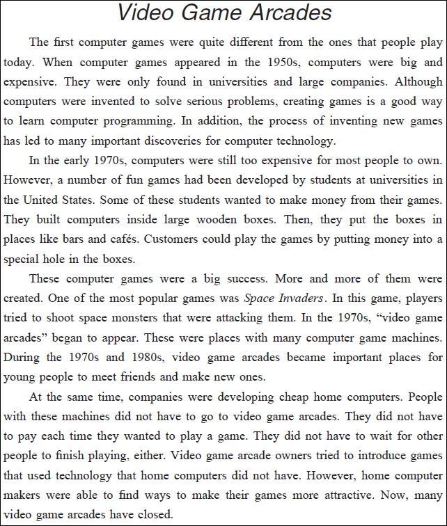

英語検定 準２級(2023年第1回No.4) 残り時間が0になると、自動的に採点します。 時間内に終了する場合は、一番下の「採点する」のボタンを押してください。 残り時間： 分 秒 1-4 英語検定(準２級) 筆記 2023年第1回(No.31～No.37) 各１０点 × 7問 ＝ 7０点満点 次の英文を読み、(31)から(33)の各質問に最も適切なものを、1～4 の中から一つ選びなさい。  問31 Question: What is one thing that Ralph asks Gary? 答え： ( 31 ) (1) If Gary has tried the basketball court in his local park. (2) If Gary bought a new basketball when he went to the mall. (3) Whether Gary's new school is near his new house. (4) Whether Gary's parents are planning to move to a new house. 問32 Question: Ralph says that his cousins from Seattle (1) or (2) or (3) or (4) 答え： ( 32 ) (1) will play in a basketball tournament in June. (2) have told him about a great new board game. (3) want to know if Gary can remember them. (4) came to stay with his family last year. 問33 Question: What does Ralph's father say that he will do? 答え： ( 33 ) (1) Speak to Gary's parents. (2) Tell Ralph the best dates to come. (3) Take Gary back to his house. (4) Visit Ralph's relatives in the city. 次の英文を読み、(34)から(37)の各質問に最も適切なものを、1～4 の中から一つ選びなさい。  問34 Question: Computer games can be used to (1) or (2) or (3) or (4) 答え： ( 34 ) (1) train new staff members when they join large companies. (2) help people understand how to make computer software. (3) solve serious problems all over the world. (4) find ways for universities to save money. 問35 Question: Why did some students put computers in places like bars and cafés? 答え： ( 35 ) (1) To discover how much money people would pay for a computer. (2) To do research on why computer games had become so popular. (3) So that they could find out what food and drinks customers bought. (4) So that they could get some money from the games they had made. 問36 Question: One reason many young people went to "video game arcades" was (1) or (2) or (3) or (4) 答え： ( 36 ) (1) that they could get to know new people. (2) that they thought space monsters might attack. (3) to show people the games they had created. (4) to get jobs making computer game machines. 問37 Question: How did owners try to get more people to come to their video game arcades? 答え： ( 37 ) (1) By introducing games that people could play without paying. (2) By giving discounts on home computers to their best customers. (3) By adding things for people to do while waiting to play games. (4) By bringing in computer technology that people did not have at home.


 英語検定 準２級(2023年第1回No.4)
英語検定 準２級(2023年第1回No.4)